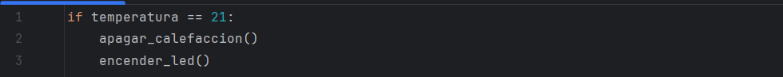
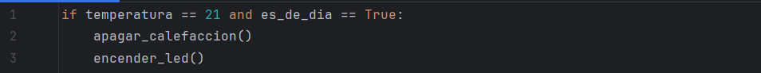
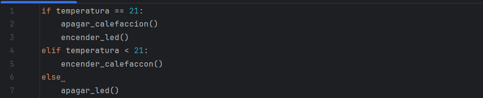

Estructuras condicionales
En programación, un condicional es una instrucción que permite que el programa tome decisiones y realice acciones diferentes según ciertas condiciones. Es como hacer una pregunta de «sí» o «no» y actuar dependiendo de la respuesta.
En Python, los condicionales se escriben utilizando la palabra clave if. Después de if, escribimos la condición que queremos evaluar y terminamos la línea con dos puntos :. Las acciones que queremos que se ejecuten si la condición es verdadera las escribimos en la siguiente línea, dejando un espacio al inicio (sangría) para indicar que pertenecen al bloque del if.
Por ejemplo, puedes utilizar un condicional para evaluar si la temperatura es igual a 21º C y, en caso de de que lo sea, ejecutar que se apague la calefacción y se encienda un led. Para ello, debes utilizar esta programación:

Recuerda que en Python se usa un solo igual cuando se quiere asignar un valor a una variable y se usan dos iguales cuando se quiere verificar si se cumple una condición de igualdad.
También se pueden crear condiciones compuestas usando las palabra and y or.
- and: todas las condiciones deben ser verdaderas para que se ejecute el bloque de código.
- or: basta con que una de las condiciones sea verdadera para que se ejecute el bloque.
Por ejemplo, apagar la calefacción y encender un led si la temperatura es de 21º C y es de día:

Si queremos comprobar varias condiciones una tras otra, podemos usar elif (abreviatura de «else if»). Si ninguna de las condiciones anteriores se cumple, podemos usar else para definir qué hacer en ese caso.
Por ejemplo:

En Python, es muy importante respetar la sangría al escribir condicionales. Las líneas de código que van dentro de un if, elif o else deben empezar con un espacio o tabulación. Esto le indica a Python qué instrucciones pertenecen a cada bloque.